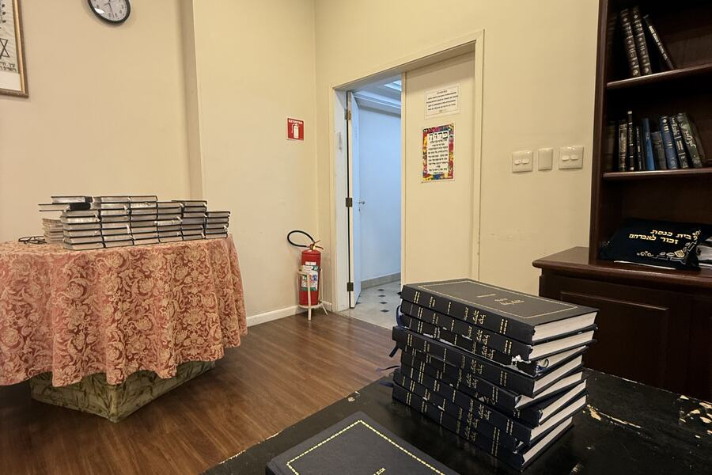
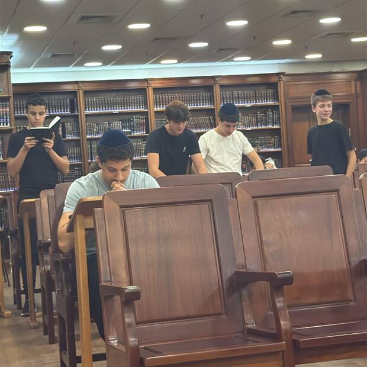
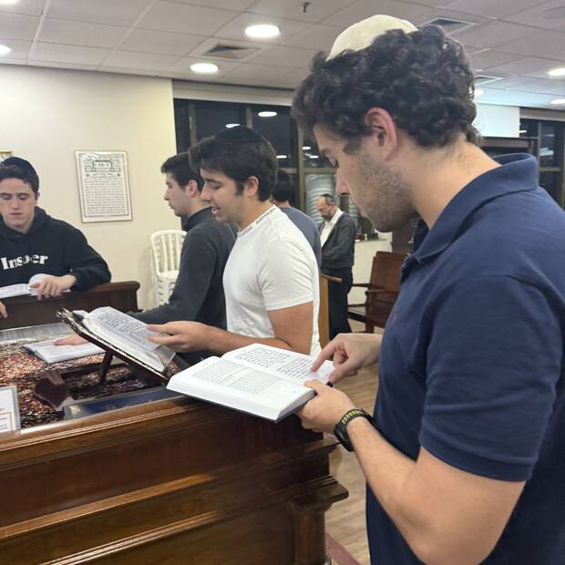

1 de 9
Selichot da meia-noite · Beit Yaakov
Todo mundo junto na meia-noite.
·dias pra Rosh Hashaná
·dias pra Yom Kipur
Isso aqui leva cinco minutos. No fim você não promete nada, e sai sabendo por que a gente insiste tanto nessa hora.
2 de 9
Primeiro, o que é isto
Selichot de meia-noite, em São Paulo inteira, tem num lugar só.

A sala do Beit Yaakov antes da meia-noite. Os sidurim já empilhados, o relógio na parede, e o lugar esperando dez.
A hora das Selichot é a madrugada. A cidade toda diz de manhã porque é mais fácil, e ninguém está errado nisso.
Aqui a gente diz na hora certa. Só que a hora certa é meia-noite, e meia-noite não enche sozinha.
3 de 9
A conta
É mais fácil do que parece.
·noites até Yom Kipur
·
e o minyan está feito, todas elas
Ninguém precisa ir toda noite. Isso quebra qualquer um, e nunca foi esse o pedido.
O que segura um minyan é muita gente indo pouco. Se cada um pegar as suas duas ou três noites, sobra gente até o fim.
4 de 9
Por que dez
carregando a noite de hoje…
toque na luz que falta
5 de 9
Como funciona
Três coisas, e acabou.
- Meia-noite. Começa três minutos antes de chatzot. O horário de cada noite fica no site.
- 35 minutos. Cronometrados. Você sabe a hora que volta pra casa.
- Anônimo. Confirmar é um botão. Ninguém vê quem apertou, e desistir é o mesmo botão.
6 de 9
O que todo mundo pergunta
"E se eu disser que vou e não for?"
Ninguém segura isso sozinho, e você não vai ser culpado de nada. Se não der, aperta o mesmo botão e sai. Ninguém fica sabendo, ninguém comenta.
"Não dá pra garantir de tarde o que eu vou conseguir à meia-noite."
A gente sabe, e é por isso que aqui você não promete nada. Você diz como quer ser chamado, alguém te conta às três da tarde como está a noite, e aí você decide com o dia já resolvido.
"Vou perder o shacharit de manhã."
É preocupação legítima, e essa conta quem faz é o seu Rav, com a sua rotina na mão. O que a gente coloca do outro lado é isto: com você lá, o Vayaavor acontece.
7 de 9
Dez segundos
Como a gente te chama?
O WhatsApp serve só pros avisos do minyan, e na próxima tela você escolhe quais quer receber, ou nenhum. Ele não aparece no site, ninguém do grupo vê, e dá pra apagar seu cadastro inteiro a qualquer hora.
8 de 9
Do seu jeito
Como você quer ser chamado?
Escolhe o que fizer sentido pra você. Dá pra mudar depois, e "não me chama" também é resposta.
Tem um dia que é mais fácil pra você?
Marque e a gente já conta com você nesse dia, sem precisar perguntar toda semana.
Quantas noites você topa até Yom Kipur?
A gente te chama pra você completar a sua meta, e para de chamar quando ela fechar.
9 de 9
Bem-vindo
Agora você é um dos que completam.
a noite de hoje
…
carregando


noites deste Elul, no 1º andar